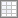

Het paneel is het werkvlak waarop je de schakeling bouwt. Het heeft een raster, linialen en een titel, en je kunt het opslaan en later weer openen.
Het raster helpt om onderdelen netjes uit te lijnen. Terwijl je een object versleept, springt het magnetisch naar de linialen, zodat onderdelen makkelijk op één lijn komen.
| Knop | Naam | Wat doet het? |
|---|---|---|
 | Raster | Toont of verbergt het raster. Meer mogelijkheden (kleur, afstand) vind je bij Instellingen. |
| Richtlijnen | Hulplijnen die tijdens het slepen door het midden van het object lopen. | |
| Kader | Teken een kader rond object(en). Zie hieronder. | |
| Titel wijzigen | Vraagt een nieuwe titel voor het paneel. |
Met een kader groepeer je onderdelen die bij elkaar horen, bijvoorbeeld “Ingangen” of “Teller”. Een kader heeft een opschrift en een kleur.
Daarna kun je het kader verslepen en met de grepen op de hoeken groter of kleiner maken. Rechtsklik op een kader voor het menu:
| Menu-item | Wat doet het? |
|---|---|
| Caption wijzigen | Geeft het kader een ander opschrift. |
| Kleur blauw / rood / groen | Verandert de kleur van de rand. |
| Kader verwijderen | Verwijdert het kader. De onderdelen erin blijven staan. |
Met Paneelkeuze begin je een nieuw paneel. Het huidige paneel wordt daarbij leeggemaakt; bewaar het eerst als je het wil houden.
| Knop | Naam | Wat doet het? |
|---|---|---|
| Paneel opslaan | Bewaart alle onderdelen, draden en hun instellingen in een .lpl-bestand. Standaard in de map panels naast het programma. | |
| Open paneel | Laadt een bewaard paneel. Het huidige paneel wordt vervangen. | |
| Schermkopie | Kopieert een afbeelding van het paneel naar het klembord. |